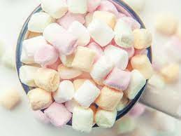

Marshmallows

Description
Soft and gooey. A perfect accompaniment for chocolate and other desserts.
Ingredients
- 3 packages unflavored gelatin
- 1 cup ice cold water,divided
- 12 oz granulated sugar, 1 1/2 cups
- 1 cup light corn syrup
- 1 tsp vanilla extract
- 1/4 tsp kosher salt
- 1/4 cup cornstarch
- Nonstick spray
Steps
- Place the gelatin into the bowl of a stand mixer along with 1/2 cup of the water. Have the whisk attachment standing by.
Back